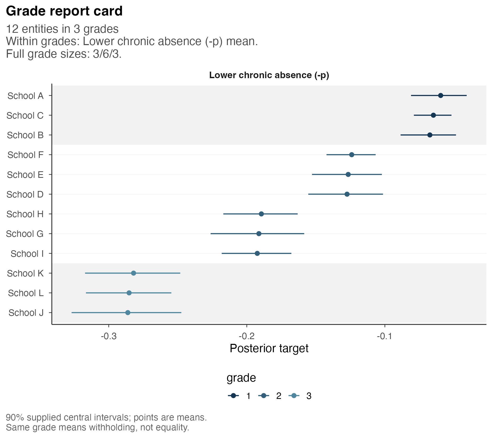
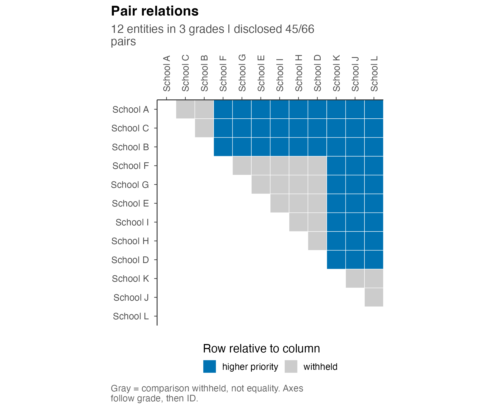
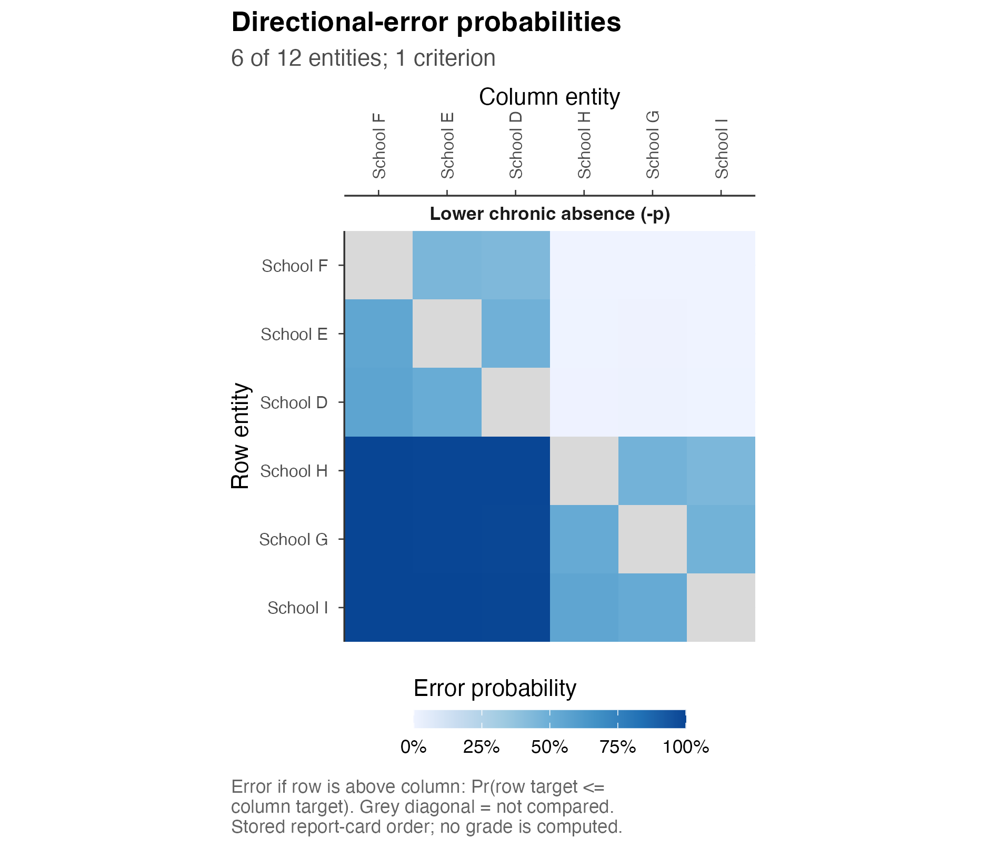

Grading California schools on chronic absence
Source:vignettes/a2-cde-accountability.Rmd
a2-cde-accountability.RmdSchool accountability tables often rank schools by their observed chronic absence rates, placing every pair of schools in order even when small enrollments or nearby rates leave their comparison uncertain. Here we use California chronic-absenteeism data to walk through a one-criterion grading that places schools in ordered integer grades and leaves within-grade pairs unordered.
The target quantity is each school’s current chronic-absence
probability p, oriented as
so lower absence receives higher priority (grade 1). This descriptive
target measures current school absence rates in the source frame; it
does not estimate a school’s causal effect on attendance or reproduce
the California School Dashboard’s two-dimensional Status-plus-Change
color rules.
All posterior inputs and optimization results below are stored in the package and loaded without fitting a model or running a solver during rendering.
Schools, counts, and empirical-Bayes posterior
The case study comes from the 2026 California School Dashboard
chronic-absenteeism release (academic year 2025–26). Its statewide frame
covers 5,834 non-alternative (non-DASS) elementary-type
schools (including eligible charter schools) with usable all-student
counts and denominators n >= 30. Because the denominator
is each school’s indicator-eligible student count, summing denominators
across schools need not equal a count of unique students.
pr_case_cde holds a 12-school teaching subset selected
deterministically from 4 observed-rate rank groups crossed
with 3 denominator rank groups (one school per cell). That
selection spans rate and enrollment strata for illustration; it is not a
representative sample for estimating statewide chronic absence.
Source data come from the CDE
chronic-absenteeism download collection; source conditions are
posted at the CDE
copyright statement. Only the 12 selected school IDs and counts and
author-derived posterior summaries are bundled here; no Creative Commons
or MIT code license is substituted for the CDE source conditions, and no
CDE endorsement is implied (see ?pr_case_cde and the
installed DATA-NOTICE.md).
library(postrank)
case <- pr_case_cde
input <- case$input
schools <- case$units
school_labels <- setNames(paste("School", LETTERS[seq_len(nrow(schools))]),
schools[["entity_id"]])
criterion_labels <- setNames("Lower chronic absence (-p)", input[["criterion_ids"]])
observed <- data.frame(
School = unname(school_labels[schools$entity_id]),
`CDS identifier` = schools$entity_id,
`Chronic-absence count` = schools$chronic_absent_count,
`Eligible count` = schools$eligible_count,
`Observed rate (%)` = round(100 * schools$observed_rate, 2),
check.names = FALSE
)
knitr::kable(observed, row.names = FALSE)| School | CDS identifier | Chronic-absence count | Eligible count | Observed rate (%) |
|---|---|---|---|---|
| School A | 30665976068399 | 20 | 363 | 5.51 |
| School B | 38684786113997 | 26 | 409 | 6.36 |
| School C | 30736506094718 | 55 | 873 | 6.30 |
| School D | 58727516056840 | 49 | 390 | 12.56 |
| School E | 30736436030639 | 56 | 448 | 12.50 |
| School F | 01750936118038 | 112 | 909 | 12.32 |
| School G | 19647330106427 | 67 | 348 | 19.25 |
| School H | 37684520105882 | 105 | 552 | 19.02 |
| School I | 36676866035711 | 124 | 642 | 19.31 |
| School J | 34674216033732 | 99 | 340 | 29.12 |
| School K | 19648816021687 | 128 | 448 | 28.57 |
| School L | 36677106035901 | 164 | 569 | 28.82 |
Each school’s count y is modeled as
given its latent chronic-absence probability p. A
piecewise-uniform empirical-Bayes prior G over
161 continuous bins was estimated once on the full
5,834-school frame (with roughness penalty
lambda = 10, a prior-fitting parameter distinct from the
unordered-pair cost tau below) and held fixed for these 12
schools rather than refitted to the 12-school subset. Given
G and (y, n), a school’s posterior within each
bin is a truncated Beta(y + 1, n - y + 1) density weighted
by its posterior bin mass. All means, 90% intervals, and pairwise
probabilities integrate that continuous density; uncertainty in
estimating G itself is held fixed and not propagated.
Priority direction and reporting loss
Because postrank() gives higher priority to larger
target values, the target is defined as
so lower chronic-absence probabilities receive grade 1, and placing
school i above school j reports
().
Under the continuous piecewise-Beta posterior, two schools have zero
probability of exact equality, and placing them in the same grade leaves
their comparison unordered without claiming equal absence rates.
The analysis allows at most G_max = 3 grades and prices
each unordered pair at tau = 0.20, relative to cost
1 for a wrong-direction ordered pair. Over all
M unordered pairs, a grading that orders N
pairs with total posterior expected wrong-direction errors
E has loss R = (E + tau * (M - N)) / M. With
one criterion, weights defaults to 1.
Recomputing the grading requires a solver (Gurobi is the default and
needs a license; backend = "highs" uses the open-source
highs package from install.packages("highs")).
The solver call is shown below with eval = FALSE, and the
stored result from an equivalent call is loaded with
postrank_example():
analysis <- postrank(
input,
tau = 0.20, G_max = 3L,
level = 0.90,
backend = "highs",
control = postrank_control(time_limit = 30, threads = 1L, seed = 1304L),
fragility = FALSE
)
analysis <- postrank_example("case_cde_12")
analysis
#> <postrank_analysis> 12 entities in 3 grades (sizes 3 / 6 / 3)
#> One criterion: negative_chronic_absence.
#> Posterior loss: 0.0638.
#> Disclosed 45 of 66 pairs (68.2%); withheld 21.
#> Expected error among disclosed pairs: negative_chronic_absence 0.000.
#> Solver: Optimal within solver tolerances.
#> Optimization gap: 1.39e-17; requested absolute gap 1e-08.
#> Prepared: report card.
#> Grade 1 has highest priority; a shared grade withholds the comparison.
#> grade 1 (3): 30665976068399, 38684786113997, 30736506094718
#> grade 2 (6): 58727516056840, 30736436030639, 01750936118038, 19647330106427,
#> 37684520105882, 36676866035711
#> grade 3 (3): 34674216033732, 19648816021687, 36677106035901
#> i summary(x) explains the loss, settings and bounds; get_grades(x) returns
#> all grades.In the console output, “disclosed” means ordered pairs and “withheld” means unordered pairs.
Grades, report card, and expected error profile
The stored grading uses 3 grades (3 / 6 / 3
schools):
grades <- get_grades(analysis)
grade_groups <- lapply(sort(unique(grades)), function(g) {
ids <- names(grades)[grades == g]
data.frame(Grade = g, Schools = length(ids),
Members = paste(unname(school_labels[ids]), collapse = ", "))
})
knitr::kable(do.call(rbind, grade_groups), row.names = FALSE)| Grade | Schools | Members |
|---|---|---|
| 1 | 3 | School A, School B, School C |
| 2 | 6 | School D, School E, School F, School G, School H, School I |
| 3 | 3 | School J, School K, School L |
postrank_plot_report_card() plots the posterior means
and 90% equal-tail marginal intervals for
within each assigned grade, ordered by posterior mean:
postrank_plot_report_card(
analysis, order = "mean", order_by = input$criterion_ids,
max_rows = nrow(schools), ncol = 1L,
entity_labels = school_labels, criterion_labels = criterion_labels
)
Open full-size figurePosterior means and 90% equal-tail marginal intervals for theta = -p across the 12 selected California schools, grouped by assigned grade.
Values closer to 0 correspond to lower chronic-absence
probabilities. On the negated scale, each school’s mean is
and its 90% marginal interval is
(taken one school at a time rather than simultaneously across all 12
schools). Because input stores only those 90% endpoints,
pass level = 0.90; other interval levels cannot be computed
from input alone.
profile <- get_profile(analysis)
profile[, c("criterion", "E", "E_over_N", "E_over_M", "risk")]
#> criterion E E_over_N E_over_M risk
#> 1 negative_chronic_absence 0.009114741 0.0002025498 0.0001381021 0.06377447
get_risk(analysis)
#> $risk
#> [1] 0.06377447
#>
#> $lower_bound
#> [1] 0.06377447
#>
#> $gap
#> [1] 1.387779e-17
#>
#> $status
#> [1] "optimal"Out of M = 66 unordered school pairs, the grading orders
N = 45 (68.2%) and leaves 21
pairs unordered. Its posterior expected wrong-direction count is
E = 0.00911, or 0.020% (0.000203)
per ordered pair (0.014% across all 66 pairs).
Total loss is 0.063774, of which 0.063636
(0.20 * 21 / 66) comes from the 21 unordered
pairs and 0.000138 from expected wrong-direction errors.
The solver finished with status "optimal", lower bound
0.063774, and gap 1.39e-17 (which measures
optimization over the supplied probability matrix rather than quadrature
or model error).
Pairwise support inside the middle grade
postrank_plot_relations() shows the 45
ordered pairs (colored cells) and 21 unordered pairs (gray
cells) in one upper triangle:
postrank_plot_relations(analysis, entity_labels = school_labels)
Open full-size figurePairwise ordering decisions across the 12 California schools, with ordered pairs in color and unordered within-grade pairs in gray.
Grade 2 holds 6 schools (Schools D through
I). Plotting their pairwise directional-error probabilities
illustrates why leaving a pair unordered is different from finding the
two schools similar:
middle_ids <- names(grades)[grades == 2L]
postrank_plot_pairwise(
analysis, entities = middle_ids, ncol = 1L,
entity_labels = school_labels, criterion_labels = criterion_labels
)
Open full-size figurePosterior directional-error probabilities Pr(theta_i <= theta_j) among the six schools in grade 2.
Inside grade 2, the posterior probability that School F
has lower chronic absence than School I is
99.99% (0.999896), yet their comparison is
left unordered because G_max = 3 allows at most three
grades across all 12 schools: splitting School F from
School I would shift grade boundaries for other pairs as
well.
Evaluating fixed tertile and all-unordered reports
Using postrank_evaluate(), we evaluate three fixed
alternatives on the same 12 schools, posterior probabilities, and
tau = 0.20 without running a solver: leaving all pairs
unordered, fixed observed-rate tertiles (4 / 4 / 4), and
fixed posterior-mean tertiles (4 / 4 / 4):
fixed <- lapply(case$reference$actions, function(g) {
postrank_evaluate(g, input, weights = c(negative_chronic_absence = 1), tau = 0.20)
})
evaluations <- c(list(optimized = analysis$evaluation), fixed)
method_names <- c(
optimized = "Optimized grades (3 / 6 / 3)",
all_withheld = "All pairs unordered (12)",
observed_rate_tertiles = "Observed-rate tertiles (4 / 4 / 4)",
posterior_mean_tertiles = "Posterior-mean tertiles (4 / 4 / 4)"
)
comparison <- do.call(rbind, lapply(names(evaluations), function(m) {
z <- evaluations[[m]]
data.frame(
Report = unname(method_names[m]),
`Ordered pairs` = z$N,
`Expected errors` = round(unname(z$E), 4),
`Errors / N (%)` = if (z$N == 0L) "NA" else as.character(round(100 * unname(z$E_over_N), 3)),
Loss = round(z$primary_risk, 6),
check.names = FALSE
)
}))
knitr::kable(comparison, row.names = FALSE)| Report | Ordered pairs | Expected errors | Errors / N (%) | Loss |
|---|---|---|---|---|
| Optimized grades (3 / 6 / 3) | 45 | 0.0091 | 0.02 | 0.063774 |
| All pairs unordered (12) | 0 | 0.0000 | NA | 0.200000 |
| Observed-rate tertiles (4 / 4 / 4) | 48 | 1.8288 | 3.81 | 0.082255 |
| Posterior-mean tertiles (4 / 4 / 4) | 48 | 1.8288 | 3.81 | 0.082255 |
In this 12-school subset, observed-rate tertiles and posterior-mean
tertiles assign the same grades, ordering 48 pairs
(3 more than the optimized grading) with
E = 1.8288 expected wrong-direction errors
(3.810% per ordered pair) and loss 0.082255
versus 0.063774. Leaving all pairs unordered gives loss
tau = 0.200000 and Errors / N = NA because
N = 0. This comparison applies to these 12 schools and
settings and does not claim that one procedure dominates score-cut rules
in general.
Relation to the 5,834-school statewide analysis
case$reference$statewide$metrics stores summary rows
from the separate statewide analysis of all 5,834 eligible
schools (17,014,861 pairs) at tau = 0.20 and
G_max = 3. Those statewide baselines sort schools by a
chosen score and optimize contiguous grade cutpoints along that fixed
order (rather than solving an unrestricted 5,834-school integer
program):
state <- case$reference$statewide$metrics
keep <- c("posterior_mean", "raw_rate", "expected_rank", "all_tie")
state_show <- state[match(keep, state$method), ]
knitr::kable(data.frame(
Method = c("Posterior-mean cuts", "Observed-rate cuts",
"Expected-rank cuts", "All pairs unordered"),
`Ordered pairs` = format(state_show$N, big.mark = ","),
`Ordered (%)` = round(100 * state_show$N_over_M, 1),
`Errors / N (%)` = ifelse(state_show$N == 0L, "NA",
as.character(round(100 * state_show$E_over_N, 2))),
Loss = round(state_show$risk, 6),
check.names = FALSE
), row.names = FALSE)| Method | Ordered pairs | Ordered (%) | Errors / N (%) | Loss |
|---|---|---|---|---|
| Posterior-mean cuts | 11,343,829 | 66.7 | 1.32 | 0.075487 |
| Observed-rate cuts | 11,337,601 | 66.6 | 1.33 | 0.075563 |
| Expected-rank cuts | 11,342,876 | 66.7 | 1.32 | 0.075479 |
| All pairs unordered | 0 | 0.0 | NA | 0.200000 |
With optimal contiguous cuts of the posterior-mean ordering, the
statewide report orders 66.7% of pairs with
1.32% expected errors per ordered pair and loss
0.075487 (versus 0.075479 for expected-rank
cuts, illustrating that posterior-mean ordering need not minimize loss
even on one criterion). An independent-pair relaxation gives lower bound
0.067091 (relaxation gap 0.008396), which
compares fixed-order cuts against a pair-by-pair relaxation rather than
solving the unrestricted statewide problem.
Finally, case$reference$quadrature$checks records
numerical quadrature checks on the 12-school input across
16, 32, and 64 Gauss-Legendre
nodes per prior bin: the largest successive-order probability difference
is 2.22e-15, and symmetric complement adjustment at
16 nodes changed entries by at most 7.77e-16.
Those checks confirm quadrature stability; they do not verify the
binomial empirical-Bayes model or bound integration error outside the
tested orders.
This teaching dataset accompanies JoonHo Lee (2026), How Much Can
School Accountability Indicators Distinguish? Uncertainty-Aware
Reporting of Chronic Absenteeism and Suspension in California; full
preparation records live in pr_case_cde$provenance and
pr_case_cde$reference.
Where next
- To prepare probability or draw inputs for another indicator, read Preparing your posterior draws and comparison probabilities.
- To export grade tables and reports, read Reading and exporting grading
results, and to vary
tauorG_max, read Figures and sensitivity to reporting settings. - For the underlying theory, see Posterior ranking, integer grades, and reporting loss and Posterior representations and pairwise comparison probabilities.